codage des nombres
modelisationCivilisations anciennes
Le document suivant donne un aperçu des périodes d’existence d’anciennes civilisations.
L’apparition des grandes civilisations commence alors que le néolithique prend fin. C’est l’usage de la metallurgie qui aura pour conséquence de structurer davantage la société, avec l’usage d’armes en métal par des soldats spécialisés. La protection des richesses accumulées par les producteurs est confiée à des guerriers professionnels. La société se hiérarchise: timeline
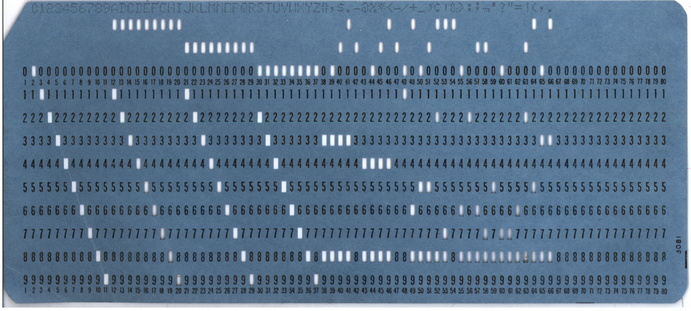
Carte du monde. IREM Lille
La naissance de l’écriture… et du nombre
Dans les temps préhistoriques, les hommes ont eu besoin de recourir à une numération. Ils ont naturellement utilisé des artefacs pour compter (des objets, des os…). L’écriture n’existait pas.
Le plus vieux vestige montrant cette activité date de 35 000 ans. Il s’agit d’un os qui a été utilisé comme baton de comptage.
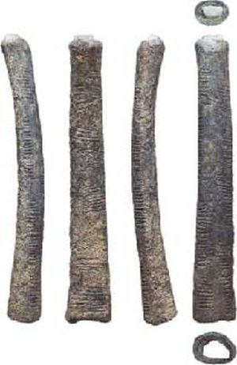
Le bâton d’Ishango (à gauche), exposé à l’Institut royal des sciences naturelles de Belgique
Que comptaient-ils exactement avec ce baton? Les proies tuées, le nombre d’individus de leur clan, …, il nous est impossible de le savoir.
Pour certains peuple primitifs, la numération se limitait d’ailleurs à 3 : un, deux, trois, beaucoup…
Au néolithique, la société devient sédentaire et se structure davantage. Alors l’homme éprouve un besoin plus urgent de dénombrer, et de calculer.
A partir du VII millénaire avant JC : des vestiges de jetons en pierre montrent l’activité de compter. D’autres objets de comptage ont été utilisés, comme des petits jetons en argile (calculis) que l’on mettait dans une bourse:
Il s’agissait d’une sphère d’argile creuse dans laquelle on insérait des calculis et sur laquelle on marquait le contenu et qu’on signait avec un sceau-cylindre.

Bulle-enveloppe et ses jetons de comptabilité (Institute museum Chicago)
Comment ça se passe en pratique, le dénombrement ?
Au quotidien, les hommes ont d’abord utilisé leurs doigts ou leur phalanges pour compter. Selon la méthode employée, ils ont alors compté en base 10 (10 doigts de la main), ou en base 20 (en incluant les doigts de pied), en base 12 (en utilisant les phalanges), ou en base 60.
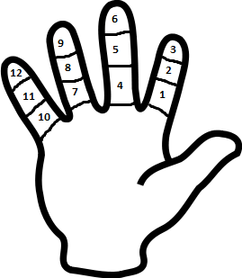
systeme de numération duodecimal (base 12)
Et l’écriture des chiffres ?
Au IV millénaire avant JC : On trouve les plus anciennes traces de chiffres écrits (Mésopotamiens1 et Egyptiens), gravés sur des supports en argile.
Les symboles que l’on peut observer sur la photographie suivante sont des formes de clous ou des barres verticales |, des chevrons <.
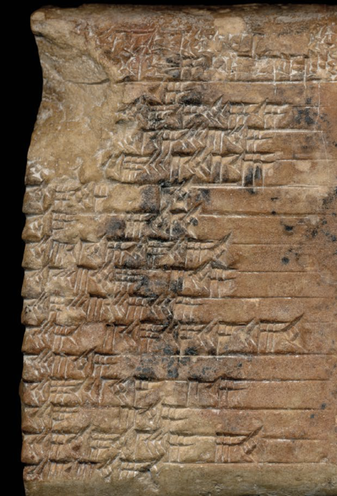
tablette en argile. 3000 ajc. Mésopotamie
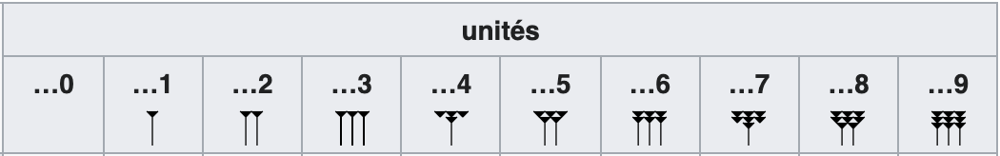
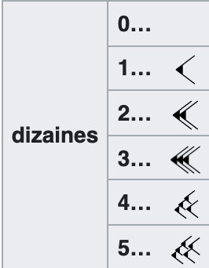
Comment ces chiffres constituent-ils des nombres ?
Les systèmes de numération antiques variaient d’une aire culturelle à l’autre :
Pour chacun des systèmes de numération, la valeur d’un nombre est égale à la somme des symboles qui le composent. Ce sont des numérations dites additives.
Base 10: Les Egyptiens2, pour écrire le chiffre 7, répétaient le symbole de l’unité | sept fois par exemple ( ||||||| ). lorsque ces symboles devaient être répétés dix fois, on remplaçait ces 10 symboles unitaires par un nouveau symbole correspondant à la dizaine.
Il s’agit d’une numération en base 10 (numération décimale), mais différente de la notre: Un autre symbole correspond à la dizaine de dizaine, etc.
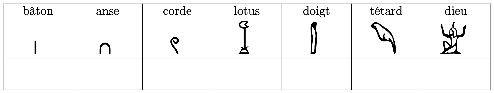
symboles utilisés par les egyptiens, de 1 à 1 million
Base 60: Pour les Babylonniens3 cependant, cette numération ne permettait de compter que jusqu’à 59. Ils ont alors utilisé les mêmes chiffres pour dénombrer les soixantaines:
$$71 = 1 \times 60 + 11 \times 1$$Ce qui s’écrira en notation babylonienne:
$$| ~ >|$$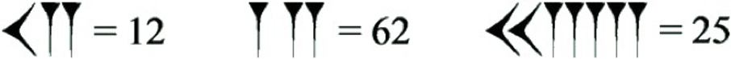
Equivalence entre la base 60 sumérienne et notre base décimale
Toutes les civilisations n’ont pas adopté la numération décimale, ni les mêmes symboles pour compter :
- Les Sumériens au proche-orient comptaient en base 60 (numération sexagésimale).
- La base 12 (système duodécimal) était connue et utilisée par certaines populations (Moyen-Orient, Roumanie, Égypte, etc.)
- En Eurasie, les peuples indo-européens utilisaient un système décimal mais avec des symboles alphabétiques, notamment par les signes I, V, X, L, C, D et M, appelés chiffres romains: voir article et exemples4
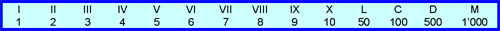
symboles romains
Comment est apparu le ZERO ?
Les Sumériens ont progressivement remplacé les petits objets en argile représentant les nombres par l’écriture sur des tablettes en argiles. Ils gravaient dessus avec un calame en roseau. Le comptage matériel est alors devenu un comptage conceptuel. Ainsi sont nés les plus vieux chiffres connus de l’histoire, et surtout, l’invention du ZERO.
Sans l’écriture du zero, il peut y avoir une confusion dans la lecture. Le nombre suivant, écrit en notation babylonienne :
$$| > |$$Celui-ci peut ainsi signifier:
$$1 \times 60 + 11 \times 1 = 71$$mais aussi, selon la position supposée de l’espacement:
$$11 \times 60 + 1 \times 1 = 661$$ou encore:
$$11 \times 3600 + 0 \times 60 + 1 \times 1 = 39 601$$L’invention du ZERO implique que l’écriture du nombre va suivre la règle de la position des symboles : les dizaines sont écrites avec un symbole mis à la position des dizaines, les unités sont écrites avec un symbole mis à la position des unités. Et lorsque le nombre par exemple ne comporte pas de dizaine, on met un ZERO à la position du chiffre des dizaines.
C’est la position du chiffre qui permet de savoir si celui-ci représente unité, dizaine ou centaine. C’est ce que l’on appelle la numération de POSITION.
Ce signe signifiant RIEN, et appelé le ZERO sera décisif pour l’apparition de la science du calcul, l’arithmétique.
Sans l’écriture du ZERO, l’usage des nombres ne permet pas de réaliser facilement des opérations. On ne peut pas facilement reporter des retenues depuis les unités vers les dizaines par exemple (base 10). Le zero va faciliter les opérations arithmétiques.
Fondamentalement, ce sont les savants indiens qui vont faire évoluer le zéro vers le sens que nous lui reconnaissons aujourd’hui, à savoir d’un nombre entier non naturel, pair, ni premier, ni positif, ni négatif.
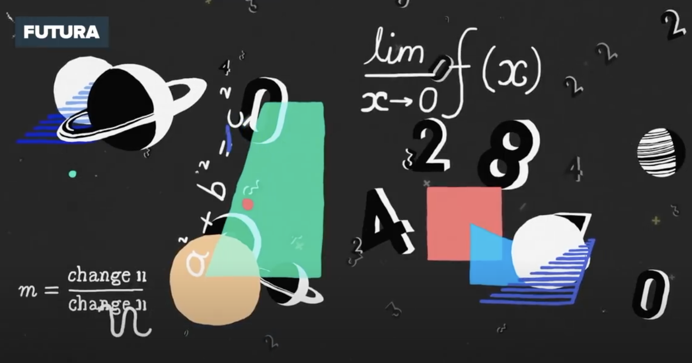
video Futura Sciences : Les découvertes du zero
Epoque médievale
Le savoir circule à travers le monde de l’Extrême-Orient à l’Egypte, de la Méditerranée à l’lslande.
Au IXe siècle, les Arabes emprunteront aux Indiens le zéro, le mot sunya devenant sifr. Ce ne sera finalement qu’au XIIe siècle que cette écriture arrivera en Occident, issue des « Ghubâr », les arabes occidentaux.
Questions
Numération Babylonienne3
- En vous aidant du documents suivant, traduire les inscriptions de la tablette sumérienne : compter le nombre d’animaux de chacune des espèces.
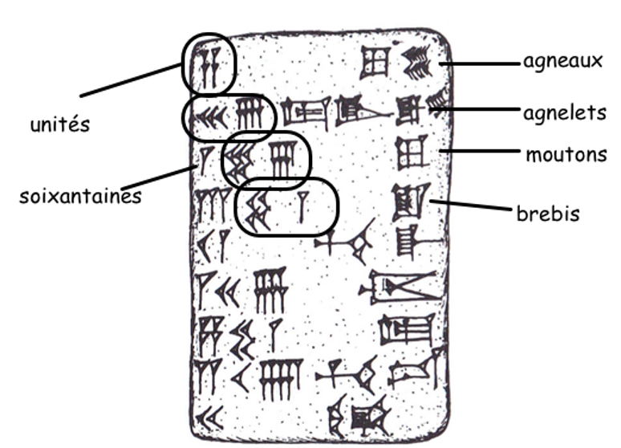
- Combien de symboles différents utilisent les sumériens pour écrire les chiffres ?
- Ces symboles, sont-ils différents pour les unités, les soixantaines, et les soixantaines de soixantaines ?
- Comment les mésopotamiens (et Sumeriens) écrivaient-ils le nombre 1637 ?
- Expliquer en quoi on peut considérer que les sumériens utilisaient une numération de position ?
Numération Egyptienne2
C’est une numération de type additif.
Les Égyptiens de l’Antiquité utilisaient des hiéroglyphes pour écrire leurs nombres. Ce système de hiéroglyphes est assez proche de notre système de numération décimale : chaque symbole possède une valeur (1,10,100,1 000…) et peut être écrit jusqu’à neuf fois.
- En étudiant les trois exemples donnés ci-dessous, retrouver la valeur des sept hiéroglyphes utilisés. (voir images)
- Comment les egyptiens écrivaient-ils le nombre 1637 ?
- Comparer les numérations Babylonienne et Egyptienne : laquelle des deux est une numération de position ? Justifiez.
- Les egyptiens, avaient-il une manière de représenter les fractions de 1 (par exemple 1/2)? Expliquer.
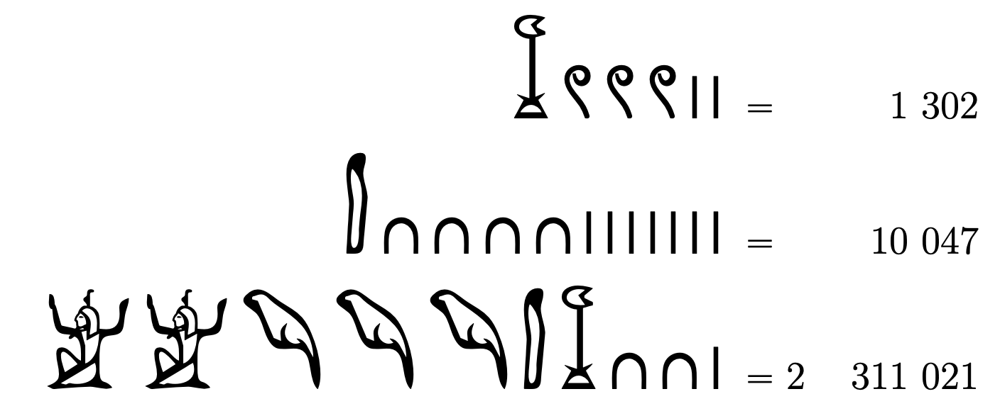
exemples, numeration egyptienne
tableau a remplir
Numération Maya5
La numération maya est une numération de base vingt pratiquée dans la civilisation mésoaméricaine maya.
Pour écrire les petits nombres, par exemple la durée d’une lunaison (c’est-à-dire les entiers 29 ou 30) ou les petits déplacements (dans l’almanach divinatoire de 260 jours), les Mayas disposaient d’une numération de type additif utilisant trois signes pour 1, 5 et 20 ; dans cette écriture : ‘20,9’ s’interprète 20 + 9. On trouve ainsi le nombre 62 écrit à l’aide de 3 signes « 20 » complétés de 2 points … (wikipedia).
L’écriture d’un nombre se fait par empilement de chiffres. Chaque étage correspond à un poids 20 fois supérieur au poids de l’étage inférieur, à l’exception du passage du 2e au 3e étage où la multiplication n’est que de 18. Ainsi la valeur de l’étage le plus bas est multipliée par 1, du second étage par 20, du troisième étage par 20 × 18 = 360
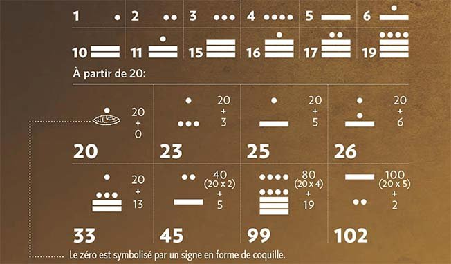
LeMonde Histoire
- Les Mayas, utilisaient-ils l’écriture pour représenter les nombres? Si oui, sur quel support écrivaient-ils?
- S’agit-il d’une numération de position?
- Commenter le document ci-dessus et expliquer cette numération.
Numération Romaine4
- Quels sont les symboles romains utilisés pour compter jusqu’à 2000?
- En quelle année, exprimée en chiffres romains, Jésus est-il né ?
- La numération romaine, peut-elle être considérée comme une numération de position?
- Comment les romains écrivaient-ils le nombre 1637 ?
Numération Chinoise6
- S’agit-il d’une numération de position?
- Quels sont les symboles utilisés?
- Enoncer les principes d’une numération en base 10.
- Comment les chinois écrivent-ils le nombre 1637 (dans l’écriture dite normale? Y-a-t-il des similitudes avec l’écriture Japonnaise?
- Est-ce que cette numération facilite les opérations entre les nombres? Comment? Expliquer en utilisant le principe du boulier
Voir exemples sur le monde-du-boulier.com
Numération Indo-arabe7
- S’agit-il d’une numération de position?
- Quels sont les symboles utilisés? Comparer ceux utilisés par les indiens (Gurmukhi), les arabes (occidental/oriental), les européens.
- Enoncer les principes d’une numération en base 10.
- Comment les indiens écrivent-ils le nombre 1637 (dans l’écriture dite (Gurmukhi)?
- Est-ce que cette numération facilite les opérations entre les nombres? Comment? Expliquer en utilisant le principe du boulier
Voir exemples sur le monde-du-boulier.com
Numération binaire
- Quelle est la valeur de la base de la numération binaire?
- Sans effectuer de calcul, dire si le nombre binaire 10011001 est pair ou impair.
- Quelle est la valeur la plus élevée que l’on peut écrire avec 8 symboles, en notation binaire?
- Comment écrit-on le nombre 1637 en binaire?
- Citer un ou des avantages de la notation binaire.
- Le binaire est aussi utilisé pour écrire des lettres et des caractères. Comment?
- Additionnez 1010 (binaire) + 1101 (binaire), réponse en binaire. Expliquez la procédure.
Numération Hexadécimale
- Quelle est la valeur de la base de la numération hexadécimale?
- L’écriture #F4 représente t-elle un nombre héxadecimal? Si oui, quelle est sa valeur?
- Quelle est la valeur la plus élevée que l’on peut écrire avec 2 symboles, en notation hexadécimale?
- Comment écrit-on le nombre 1637 en hexadecimal?
- Citer un ou des avantages de la notation hexadécimale.
- L’hexadécimal est aussi utilisé pour écrire des lettres et des caractères. Comment?
- Comment convertir rapidement 1100 1001 (binaire) en héxadecimal?
Le système bibinaire
Le chanteur et mathématicien Boby Lapointe, surtout connu pour ses talents d’auteur, de compositeur et d’acteur, a inventé un système de numération qu’il voulait universel et proche du langage des ordinateurs. Ce système, qualifié de bibinaire, s’appuie sur l’écriture binaire des nombres et présente deux aspects, un langage écrit qui repose sur des symboles associés aux nombres, et un langage oral.
Soit un nombre N. Par exemple : N = 347, donc N = 101011011 (binaire).
Dans le système bibinaire, on décompose l’écriture binaire en quartets (groupements de quatre bits) en partant de la droite et en ajoutant à gauche, si besoin est, les zéros complémentaires pour former un nombre entier de quartets.
Ici, N = (0001 0101 1011).
On considère que chaque quartet est composé de deux duets (00, 01, 10 ou 11). A chaque duet est associé une consone ou une voyelle, selon que ce duet est en tête ou en queue du quartet :
| Duet | Correspondance duet de tête | Correspondance en duet de queue |
|---|---|---|
| 00 | H | O |
| 01 | B | A |
| 10 | K | E |
| 11 | D | I |
Ainsi, le quartet 0111 se lit BI, car 01 est en tête et correspond à B et 11 est en queue et correspond à I. Le nombre N = 347 après écriture binaire, se lit HABAKI.
- Combien de quartes différents peut-on écrire en numération binaire ?
- Quelle est la base réellement utilisée dans le système bibinaire ?
- Quels nombres décimaux correspondent aux mots : HEKAKA, BOKEKE, KEBOBO et KEBAHI ?
- Comment sont traduits les nombres 52326 et 11847 dans le langage bibinaire?
Notes
-
Mésopotamiens : La civilisation babylonienne est héritière de Sumer, et elle s’est épanouie en Mésopotamie du Sud du début du IIe millénaire av. J.-C. jusqu’au début de notre ère. Elle est marquée par l’affirmation progressive, de la cité de Babylone, capitale de l’État qui connait son apogée à partir du VIe siècle av. J.-C. Cette cité prospère étend son influence du nord-est de la Syrie, au nord de l’Irak actuel, ainsi que les plaines plus au sud. Les milliers de tablettes cunéiformes découvertes sur les différents sites de Babylonie (Babylone, Ur, Uruk, Nippur, Sippar, etc.) ont permis de dresser le tableau d’une civilisation urbaine reposant sur une agriculture irriguée potentiellement très productive. https://fr.wikipedia.org/wiki/Babylone ↩︎
-
Numération egyptienne, lien wikipedia ↩︎ ↩︎
-
Numération babylonienne, lien wikipedia ↩︎ ↩︎
-
Numération Romaine: lien wikipedia ↩︎ ↩︎
-
Numération Maya: lien wikipedia ↩︎
-
Numération Chinoise: Lien wikipedia ↩︎
-
Numération indienne lien wikipedia et Numération Indo-arabe: Lien wikipedia ↩︎